43HTMLで閲覧・検索
出力済みHTMLでアカウントを探し、表示方法を切り替えます。
手順一覧を開く（16手順）
検索と表示切替
1HTMLを開く
左側が目次、右側が登録内容です。ここでは1件だけ出力した例を使います。
2検索欄を選ぶ
左上の［検索］を押します。
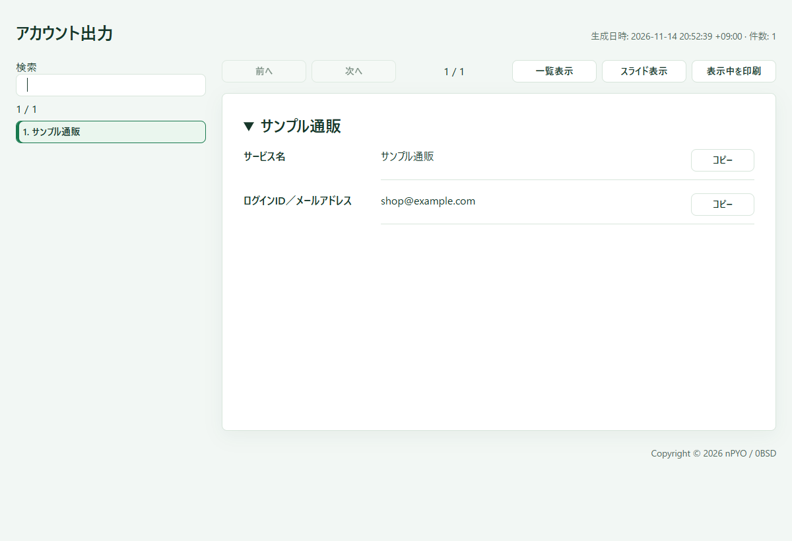
3探す語を入力する
例では「サンプル」と入力します。
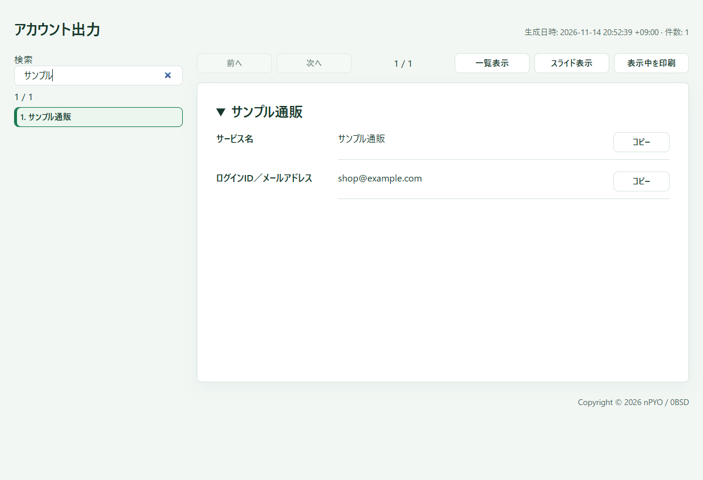
4一致しない語の場合
「未登録サービス」では一致するアカウントがありません。
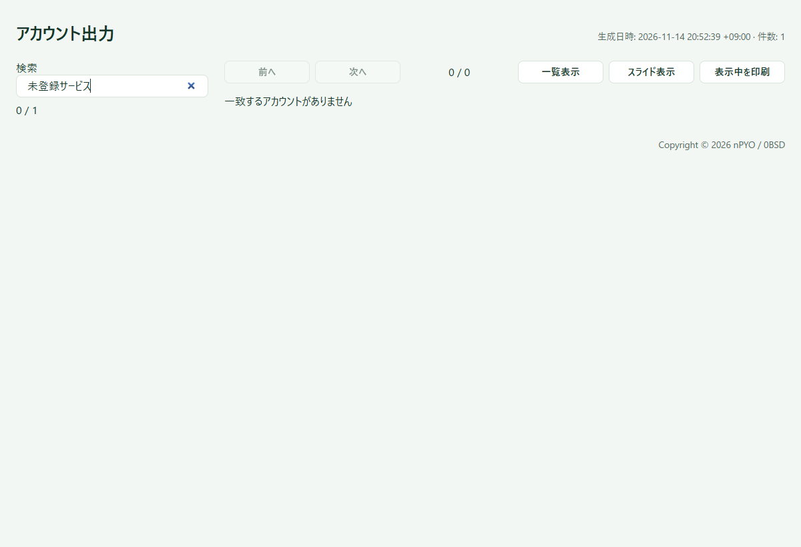
5検索を解除する
検索欄の文字をすべて消します。

6一覧表示へ切り替える
［一覧表示］を押します。
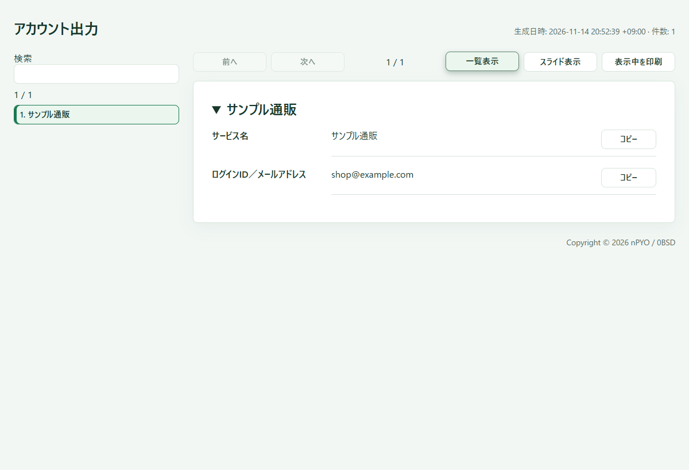
7スライド表示へ切り替える
［スライド表示］を押します。
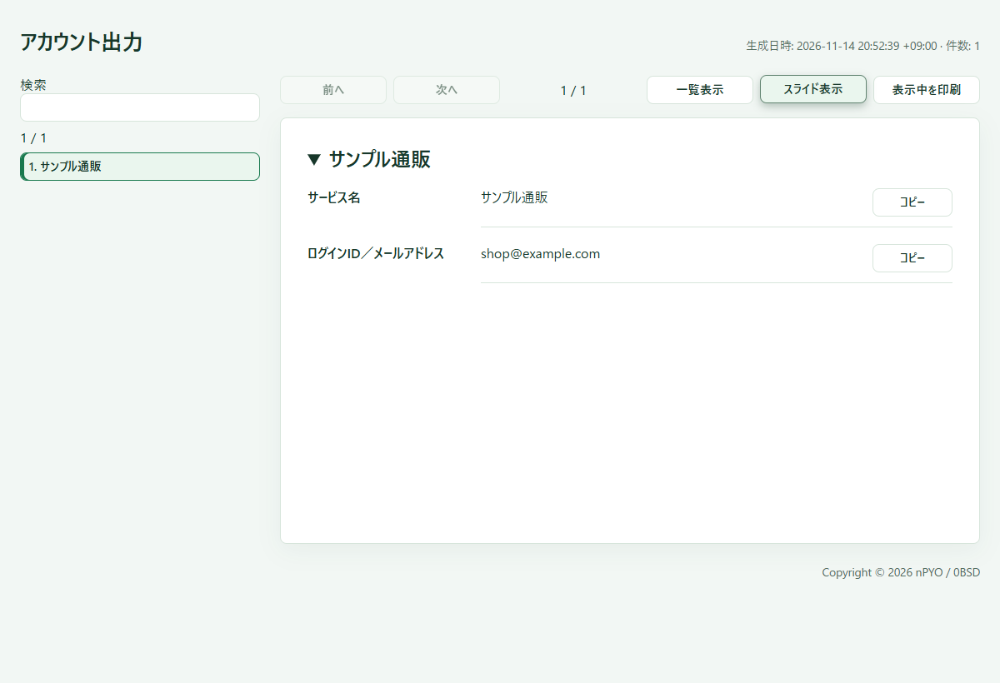
8内容を折り畳む
サービス名の見出しを押します。
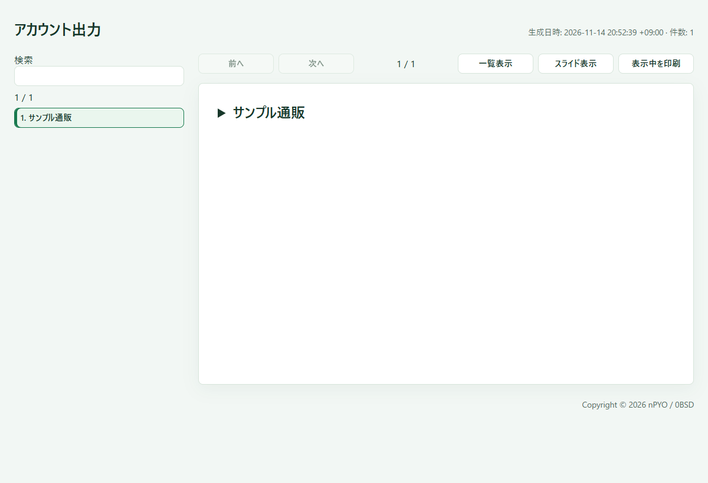
9もう一度開く
同じ見出しを再度押します。

10値をコピーする
値の右にある［コピー］を押します。例はサービス名です。
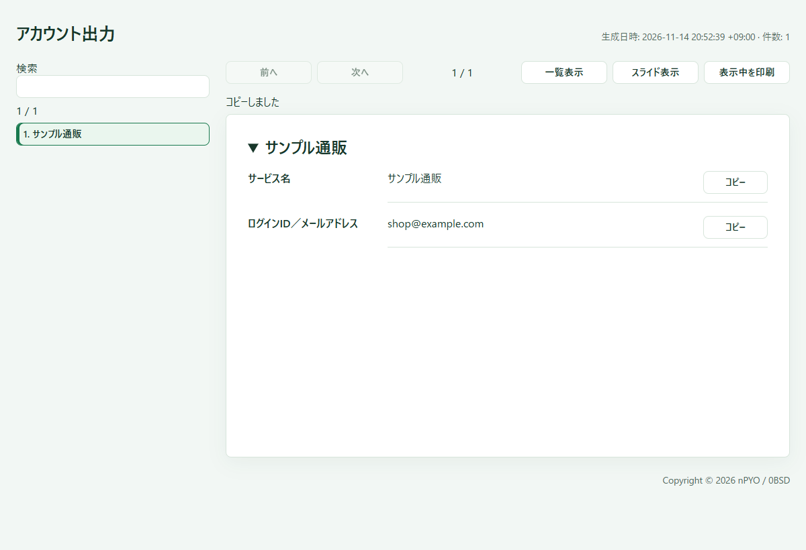
複数件を移動する
11複数件のHTMLを開く
ここからは4件を出力した別の例です。目次と現在位置を確認します。
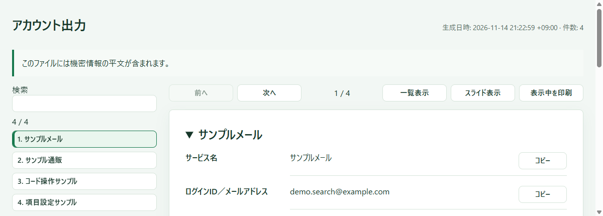
12目次で移動する
左の4番を押します。
13［前へ］で戻る
［前へ］を押します。
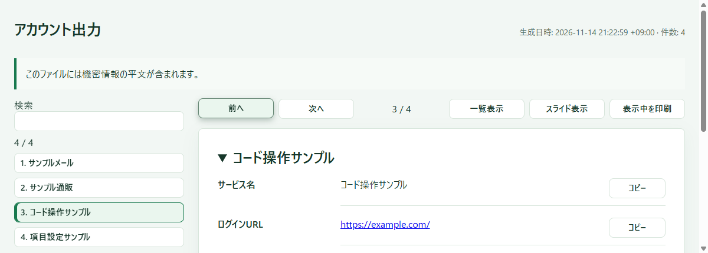
14［次へ］で進む
［次へ］を押します。

15左矢印キーで戻る
検索欄などの入力操作を終え、本文側を押してから←キーを押します。
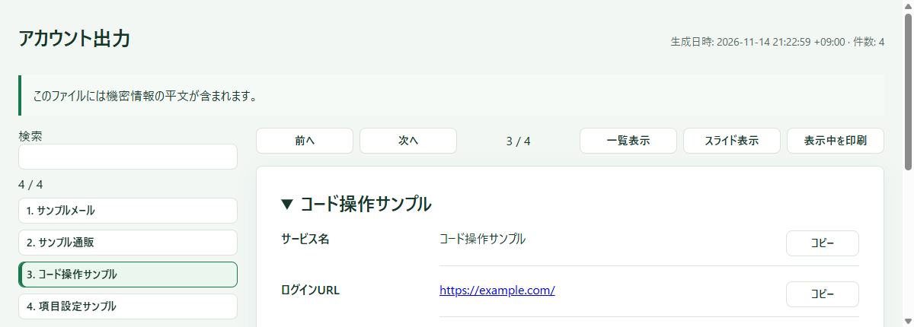
16右矢印キーで進む
→キーを押します。
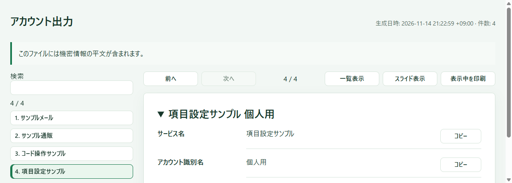